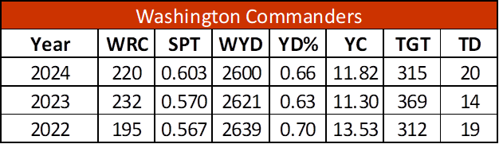

<!DOCTYPE html>

<head>

<html lang="en">

<meta charset="UTF-8">

<title>Page Title</title>

</head>

<style>
    img {
display: block;
margin: auto;
}
h1 {text-align:center}
p {text-align:center}
nav {text-align:center}
</style>


<body style="background-color:#FFB612;"></body>>

    <nav>

<a href="index.html">Homepage</a>
&nbsp;&nbsp;&nbsp;&nbsp;&nbsp;&nbsp;

<a href="Stats.html">Stats</a>
&nbsp;&nbsp;&nbsp;&nbsp;&nbsp;&nbsp;

<a href="Players.html">Players</a>
&nbsp;&nbsp;&nbsp;&nbsp;&nbsp;&nbsp;

    </nav>

<!--Your HTML tags will start here-->

 <h1>Stats Of the Washington Commanders</h1>



 <p>Stats For the Washington Commanders</p>

<!--Your HTML tags will end here-->


<form>
    <!-- Dropdown for stat changes -->
    <label for="statChanges" style="display: block; margin-bottom: 8px; font-weight: bold; color: #5A1414;">
      Add any stat changes for the current 2025 Washington Commanders roster:
    </label>
    <select id="statChanges" name="statChanges" style="background-color: #5A1414; color: white; padding: 8px; border: none; border-radius: 4px; margin-bottom: 20px; width: 100%;">
      <option value="" disabled selected>Select a player to update stats</option>
      <option>Sam Howell - QB</option>
      <option>Brian Robinson Jr. - RB</option>
      <option>Jahan Dotson - WR</option>
      <option>DeAndre Carter - WR</option>
      <option>Corey Dyches - TE</option>
      <option>Terry McLaurin - WR</option>
      <option>Jonathan Allen - DE</option>
      <option>Chase Young - DE</option>
      <option>Daron Payne - DT</option>
      <option>Montez Sweat - LB</option>
      <option>Terry Wilson - LB</option>
      <option>Saahdiq Charles - OT</option>
      <option>Hunter Littleton - OG</option>
      <option>Cam Robinson - OT</option>
      <option>Brian Asamoah - LB</option>
      <option>Eli Ricks - CB</option>
      <!-- Add more players if needed -->
    </select>

    <!-- Radio buttons for favorite player -->
    <fieldset style="border: none; margin-bottom: 20px; color: #5A1414;">
      <legend style="font-weight: bold; margin-bottom: 8px;">Who is your favorite Washington Commanders player?</legend>
      <label><input type="radio" name="favoritePlayer" value="Sam Howell" style="margin-right: 8px;">Sam Howell (QB)</label><br>
      <label><input type="radio" name="favoritePlayer" value="Brian Robinson Jr." style="margin-right: 8px;">Brian Robinson Jr. (RB)</label><br>
      <label><input type="radio" name="favoritePlayer" value="Terry McLaurin" style="margin-right: 8px;">Terry McLaurin (WR)</label><br>
      <label><input type="radio" name="favoritePlayer" value="Jonathan Allen" style="margin-right: 8px;">Jonathan Allen (DE)</label><br>
      <label><input type="radio" name="favoritePlayer" value="Chase Young" style="margin-right: 8px;">Chase Young (DE)</label><br>
      <label><input type="radio" name="favoritePlayer" value="DeAndre Carter" style="margin-right: 8px;">DeAndre Carter (WR)</label><br>
      <label><input type="radio" name="favoritePlayer" value="Daron Payne" style="margin-right: 8px;">Daron Payne (DT)</label><br>
    </fieldset>

    <!-- Comment box -->
    <label for="comments" style="display: block; margin-bottom: 8px; font-weight: bold; color: #5A1414;">
      How do you feel about the Washington Commanders?
    </label>
    <textarea id="comments" name="comments" rows="5" style="width: 100%; background-color: #5A1414; color: white; border: none; border-radius: 4px; padding: 8px; margin-bottom: 20px;"></textarea>

    <!-- Date input -->
    <label for="fanSince" style="display: block; margin-bottom: 8px; font-weight: bold; color: #5A1414;">
      When did you become a Washington Commanders fan?
    </label>
    <input type="date" id="fanSince" name="fanSince" style="background-color: #5A1414; color: white; border: none; border-radius: 4px; padding: 8px; margin-bottom: 20px; width: 100%;">

    <!-- Buttons -->
    <button type="submit" style="background-color: white; color: #5A1414; border: none; padding: 10px 20px; border-radius: 4px; cursor: pointer; margin-right: 10px;">
      Submit
    </button>
    <button type="reset" style="background-color: white; color: #5A1414; border: none; padding: 10px 20px; border-radius: 4px; cursor: pointer;">
      Reset
    </button>
  </form>
  
</body>

</html>